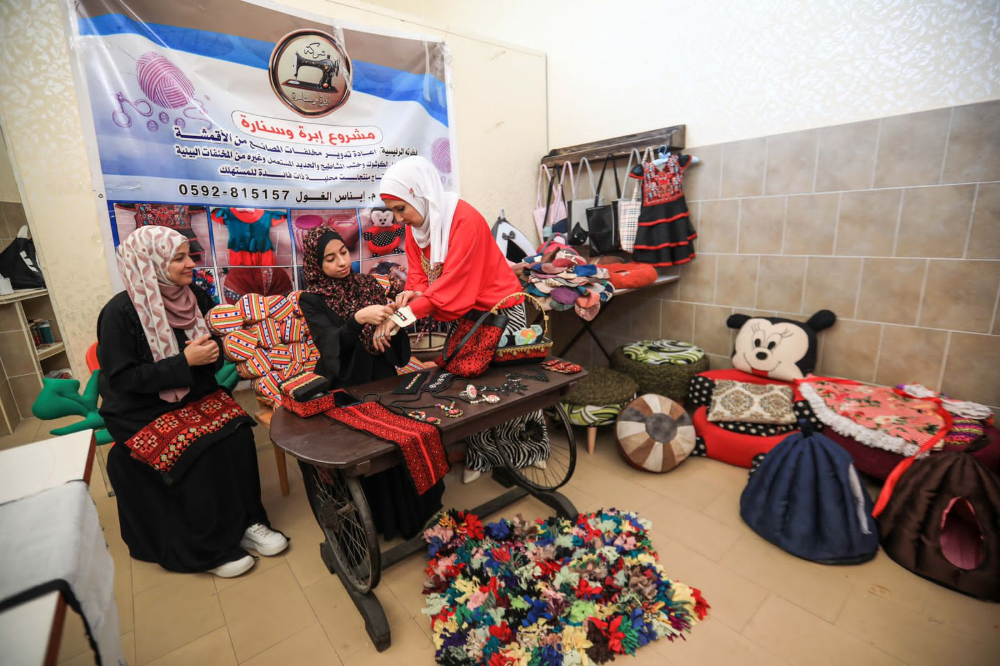

Conocimiento que se comparte
La formación de mujeres en comunidades rurales promueve habilidades de reutilización y elaboración de productos, con el propósito de ampliar sus oportunidades y difundir una cultura de cuidado ambiental.
Nuestra historia
Izmiralda Company nace de una convicción: el conocimiento, la creatividad y los recursos disponibles pueden convertirse en oportunidades para las comunidades. Nuestra historia une el reciclaje, la formación y la tecnología solar al servicio de las personas.
Conoce sus reconocimientos


El origen de la compañía
El trabajo de Izmiralda Company conecta dos necesidades: reducir los residuos y abrir oportunidades de aprendizaje y desarrollo económico en la comunidad.
Las iniciativas de reciclaje y reutilización transforman telas, prendas y otros materiales recuperados en productos útiles. Bolsos, alfombras, accesorios y piezas para el hogar muestran cómo aquello que se descarta puede recuperar valor gracias al diseño y al trabajo artesanal.
Esta manera de trabajar expresa la economía circular: aprovechar mejor los recursos, prolongar la vida de los materiales y compartir conocimientos para que más personas puedan participar. La protección del medio ambiente y el bienestar de las comunidades forman parte de un mismo propósito.
Reconocimientos de nuestra fundadora
Enas Alghoul, fundadora de Izmiralda Company, fue incluida en la selección BBC 100 Women 2024, que destaca a mujeres inspiradoras e influyentes de todo el mundo.
Este reconocimiento pone en valor su trabajo como ingeniera agrícola e inventora y su capacidad para desarrollar soluciones frente a la escasez de agua. Su historia muestra cómo el conocimiento y la creatividad pueden ponerse al servicio de las necesidades de una comunidad.
Leer el reconocimiento de la BBCSu selección en el programa StartUp Chile – BIG10 representa una oportunidad para fortalecer el desarrollo de sus proyectos y avanzar en el crecimiento de Izmiralda Company.
Para nuestra compañía, estos hitos son una motivación para seguir trabajando en economía circular, reciclaje y tecnología solar, con el bienestar de las personas como propósito.

Compartir el conocimiento es parte de nuestra historia. La formación en reciclaje y trabajo artesanal busca fortalecer las capacidades locales y abrir caminos de participación y autonomía.
La formación de mujeres en comunidades rurales promueve habilidades de reutilización y elaboración de productos, con el propósito de ampliar sus oportunidades y difundir una cultura de cuidado ambiental.
Las actividades creativas y de reciclaje acercan a niños y jóvenes al uso responsable de los recursos. La iniciativa busca apoyar especialmente a quienes han interrumpido su educación.
Cada habilidad aprendida puede compartirse con otras personas. Así, el trabajo colectivo busca reducir la dependencia, favorecer la inclusión y crear oportunidades económicas sostenibles.
El reciclaje fue el primer proyecto de Izmiralda Company: transformar materiales recuperados en productos útiles y oportunidades para la comunidad. De esa experiencia nacieron nuevas soluciones que aprovechan la energía solar para responder a necesidades de agua y alimentación.

Nuestro primer proyecto
Todo comenzó dando una nueva vida a telas, prendas y materiales descartados. A través de la elaboración de bolsos, alfombras, accesorios y objetos para el hogar, el proyecto unió el cuidado del medio ambiente con la formación y la participación de la comunidad.
Conocer nuestros orígenes →
El dispositivo de desalinización aprovecha el calor solar para evaporar el agua y recogerla mediante condensación. Su desarrollo parte de la necesidad de acercar soluciones de tratamiento de agua a las familias.
Conocer PGE Solar →
La cocina solar ofrece una alternativa para preparar alimentos aprovechando la luz del sol. El proyecto busca reducir la necesidad de combustibles y facilitar las tareas cotidianas de las familias.
Conocer la cocina solar →